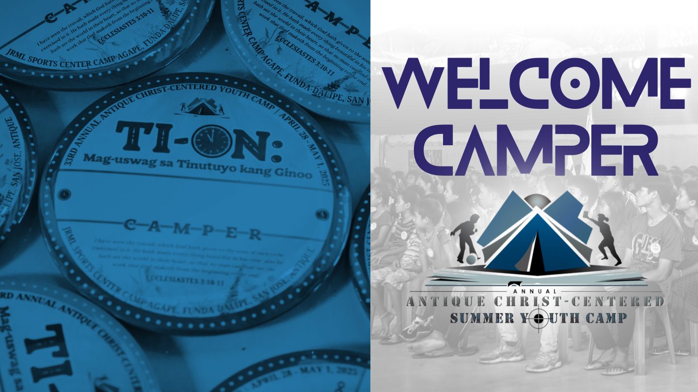
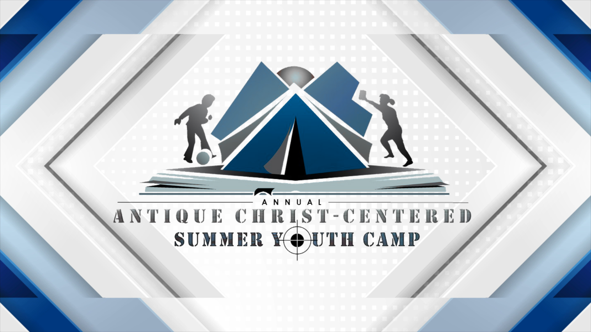
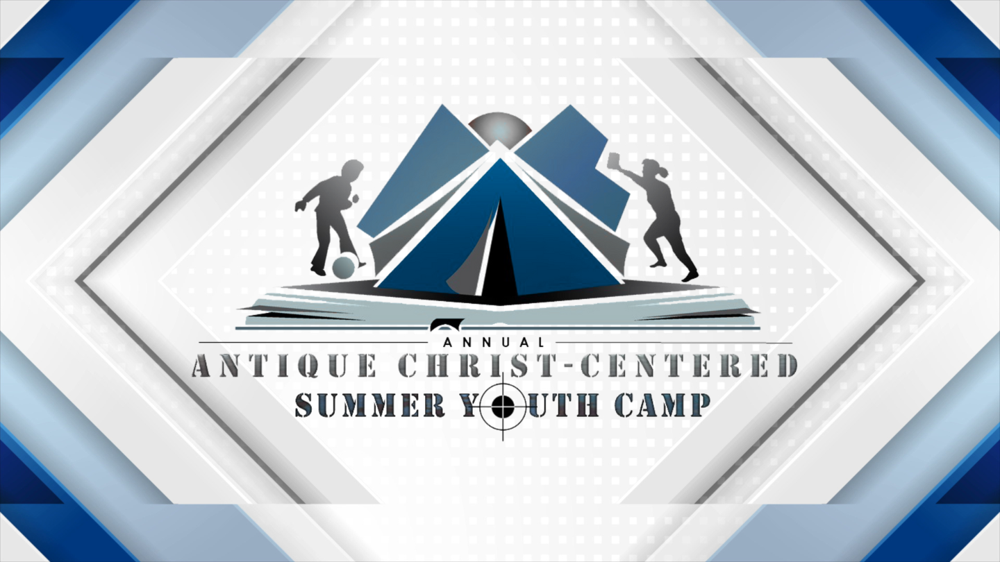
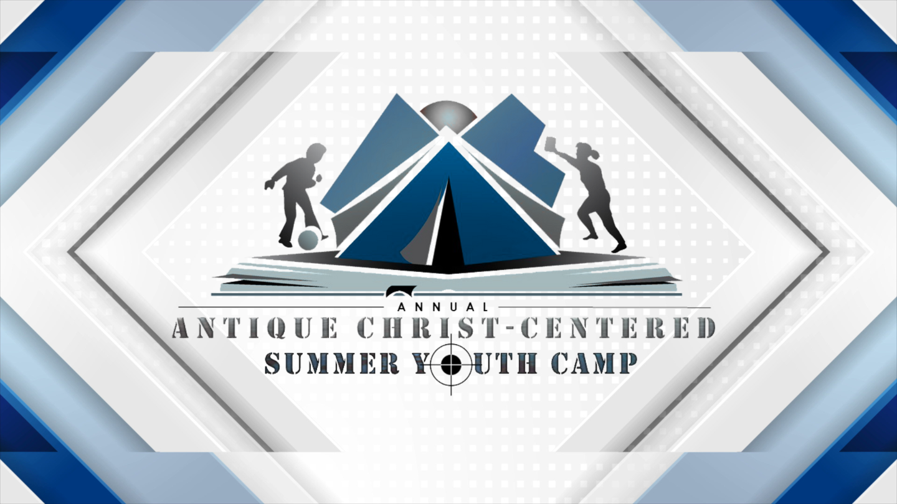
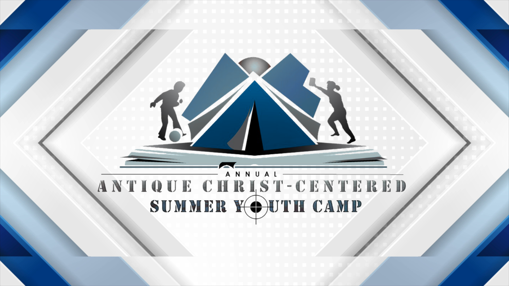

AACCYC 2025

 


Annual Antique Christ-Centered Youth Camp
Welcome to AACCYC 2025! This camp brings together the youth of Antique to grow spiritually, build friendships, and strengthen faith in Jesus Christ. Expect days filled with worship, workshops, games, and fellowship in a Christ-centered environment.
ACCYC is a dynamic and spiritually enriching gathering of young believers from across the province of Antique. Rooted in the principles of Fundamental Baptist doctrine, this annual youth camp provides a powerful environment where faith, fellowship, and fun come together under the banner of Christ.
Designed especially for teens and young adults, the camp features Bible-preaching sessions, devotional challenges, soul-winning training, inspiring testimonies, and Christ-honoring music. Campers are encouraged to grow in their personal walk with the Lord, develop godly friendships, and strengthen their commitment to live for Christ in every aspect of life.
With activities that include team-building games, Scripture memory challenges,and heartfelt altar calls, AACCYC is more than just a camp—it's a life-changing experience. Each moment is aimed at glorifying God and equipping the next generation to stand firm in faith, serve the Lord passionately, and shine the light of the Gospel in their communities.

Phone Number (Ma'am ADVCSIDVS): 0912345678